| 日付 | 2014年5月11日（日） |
|---|---|
| 山域 | 御坂･天子山塊 |
| メンバー | 家族（長男・0歳） |
| 山行形態 | 子連れ日帰り |
| アクセス | 車 |
| ルート (Map) | 分化洞トンネル (7:59) - (9:05) 毛無山 - (10:19) 十二ヶ岳 (10:32) - (11:17) 節刀ヶ岳 (12:00) - (12:43) 十二ヶ岳 - (13:57) 旧根場通学路入口 - (14:17) 分化洞トンネル |
今週末は土日とも快晴。
土曜日に山の計画を立てていたが、
娘が体調を崩してしまったため急遽取りやめ。
しかし、山の用意はしてあるし、快晴予報だしで
どこにも行かないのはもったいないため、翌日の日曜に息子を連れて山に行くことにする。
よくよく考えてみると、息子と2人で出かけるのは初めてで不安要素が大きいが
久々の準単独行のため、娘連れでは行けない山に挑戦してみることにする。
毛無山登山口に到着する。標高920m。
今朝は5時起きだったが、息子は車で寝ることなく、
後ろの席でずっとおしゃぶりをチュパチュパして大人しくしていた。
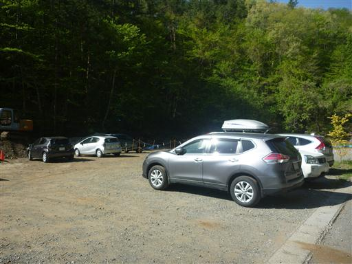
文化洞トンネルの側から毛無山への登山道が始まる。
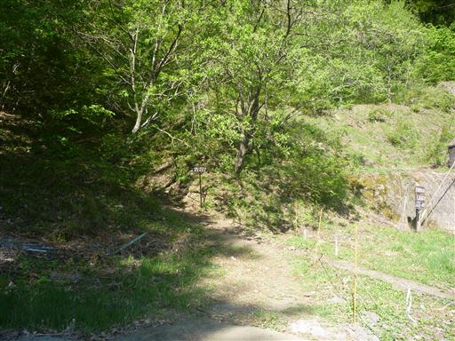
厳しい傾斜ではないが、確実に高度を上げていく。
最近ずっと娘のペースに合わせて歩いて来たため、自分のペースがなかなかつかめない。
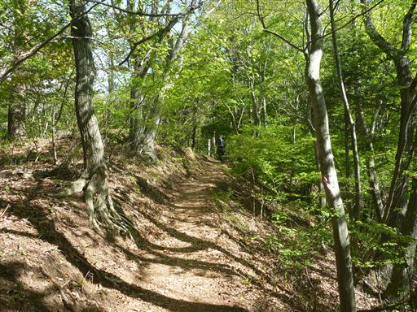
斜面に桜の花が咲いている。
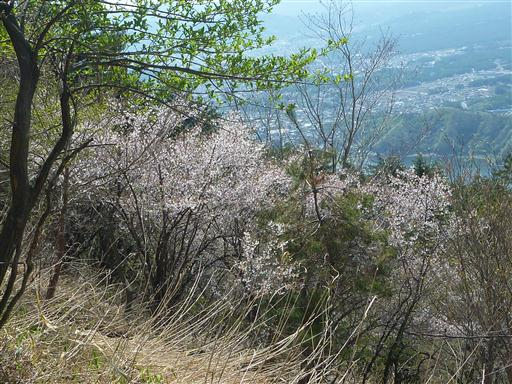
山頂に近づくと木が少なくなって展望が開けてくる。
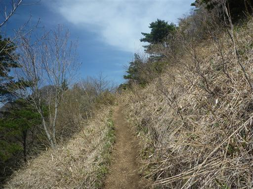
目の前に現れるのは、もちろん富士山。手前に見えるのは以前登った足和田山だ。
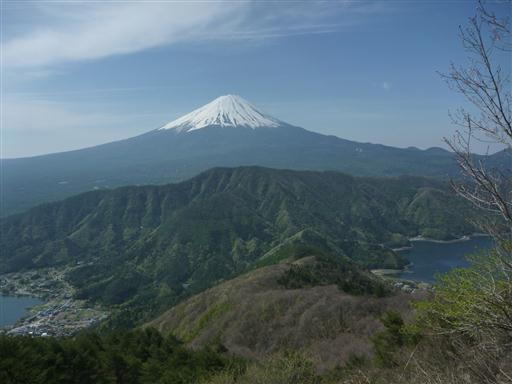
富士山の右手前に見えるのは富士五湖の1つ、西湖。
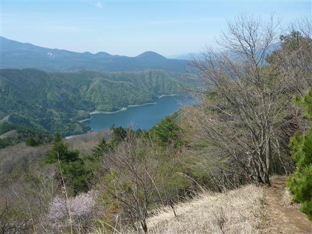
そして、左手前に見える湖が河口湖だ。
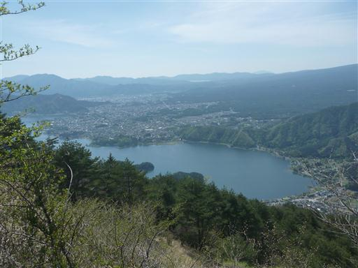
展望が開けてから一登りで毛無山山頂に到着する。標高1500m。
ここからの行程は長いのに、すでに足が疲労し始めている。
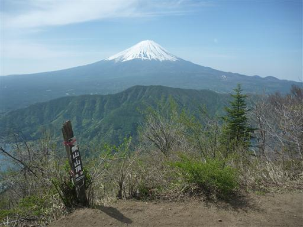
ザックを下ろして少し休憩しようと思ったが、眠りかけの息子が怒ったため
休憩をせずに十二ヶ岳に向けて出発する。

ほどなくして一ヶ岳という小ピークに到着。
十二ヶ岳という名前の山は他にもあるため、特に気にしていなかったが、
ここから12番目のピークという意味のようだ。
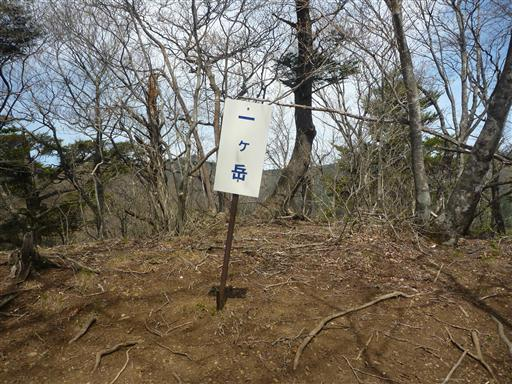
毛無山から十二ヶ岳の稜線は難易度の高い登山道。
早速、最初の岩場が現れる。

目の前に十二ヶ岳のピークが見えてくる。
ここからアップダウンが続くことを考えると、結構体力を消耗しそうだ。
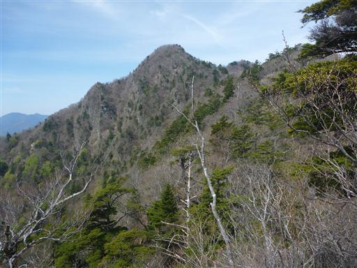
木の枝に鳥が留まっている。
少々ピントがずれているが、登山中に鳥を間近で撮影できたのは初めてだ。
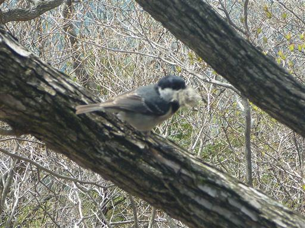
七ヶ岳に到着。ピークというよりただの岩。登山道は左に巻いていく。
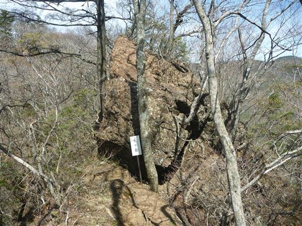
急な斜面にコイワザクラが群生している。
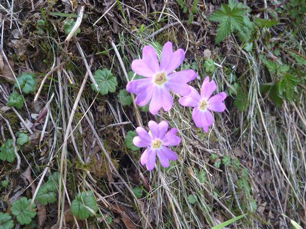
ロープを使って長い岩場を登っていく。
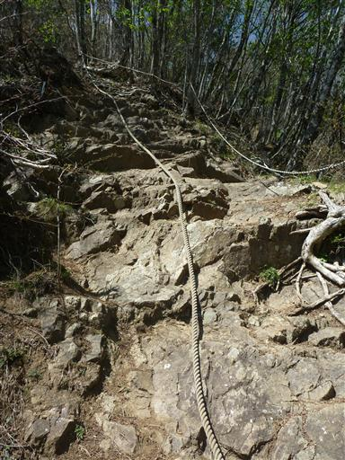
十一ヶ岳に到着。十二ヶ岳まであともう少しだ。
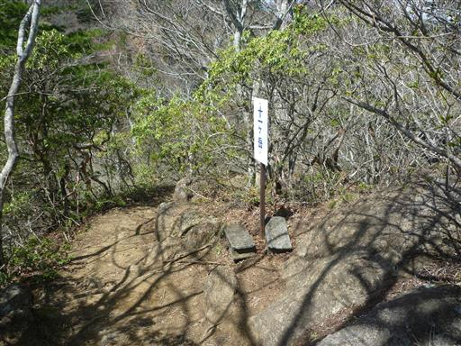
十一ヶ岳と十二ヶ岳の間は深く切れ込んでいる。
キレットに向かって今度は岩の急斜面を下って行く。
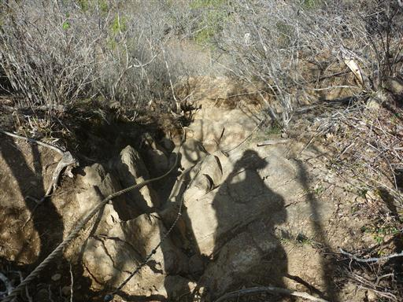
鞍部を挟んだ反対側も険しそうだ。急な崖を登っている登山者が見える。
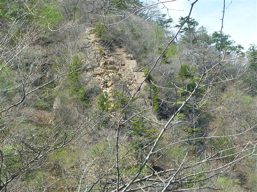
キレットに到着。急峻な溝に吊橋が架けられている。
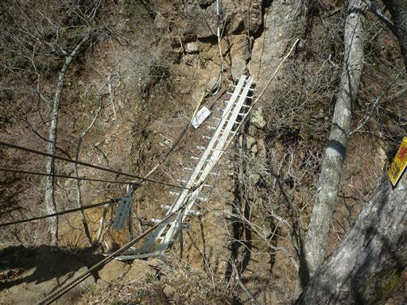
吊橋を渡ると、再び岩の斜面を登っていく。
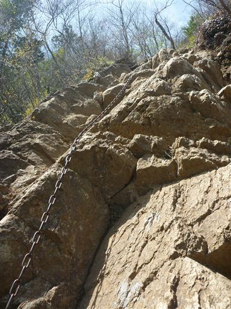
登りきると大きく展望が開ける。
目の前は十一ヶ岳、遠くには黒岳や三ツ峠山などの御坂の山々が見えている。
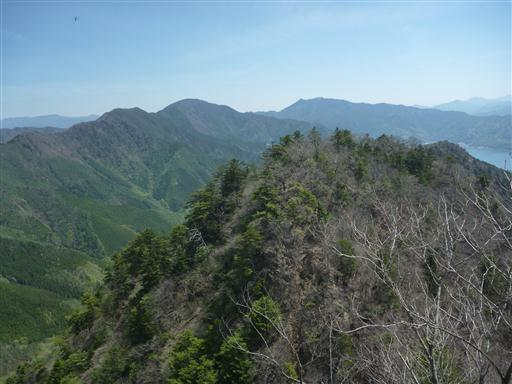
十二ヶ岳山頂に到着。標高1680m。
十一ヶ岳までは比較的楽だったが、そこから十二ヶ岳までがきつかった。
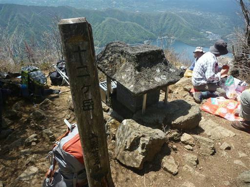
この山頂からも雄大な富士の姿を望むことができる。
10時になったので息子はここでおやつタイムだ。
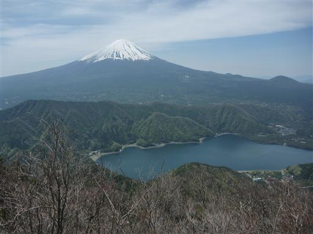
ここまでで結構疲れたので、もう下山してしまおうかとも思ったが、
もう一踏ん張りして節刀ヶ岳を往復することにする。
ここからも、しばらくは難易度の高い登山道が続く。
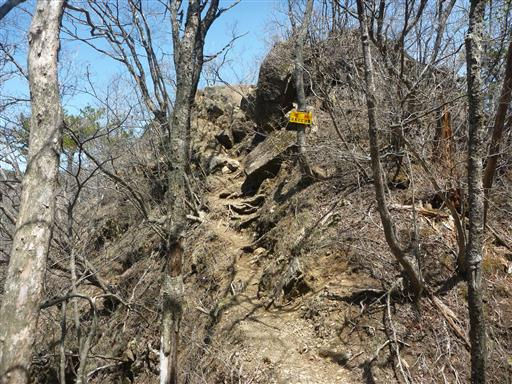
急斜面の岩場を下る。疲れている時ほど慎重さが必要だ。
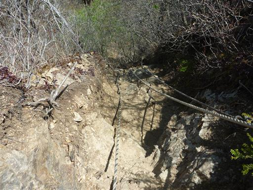
ようやく登山道が平坦になる。
左に金山、そして右に目指す節刀ヶ岳が見えている。
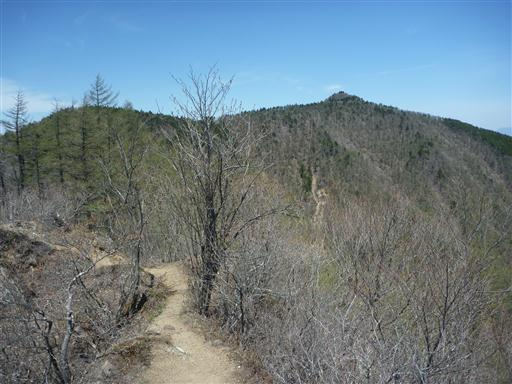
こちらは鬼ヶ岳。なかなか風格のある山だ。
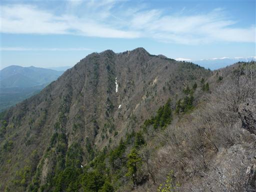
金山山頂に到着する。ここは登山道の分岐点になっている。
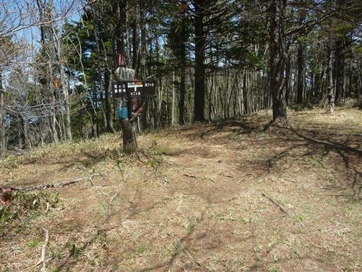
節刀ヶ岳に向かって歩いていく。
緩やかな上り坂だが、もう足がかなり疲れているため、辛い登りだ。
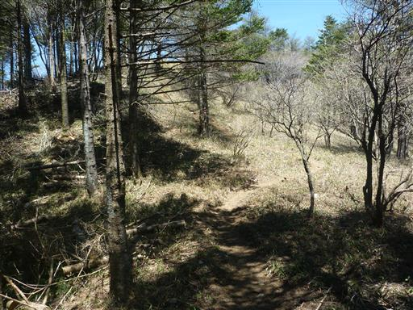
足元にエイザンスミレが咲いている。淡い紫色で美しいスミレだ。
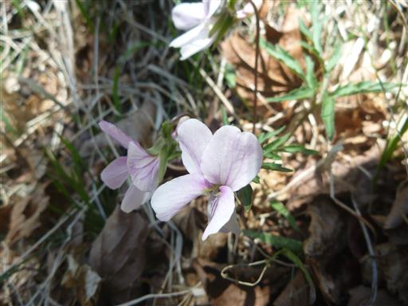
山頂直下は傾斜が少し急になる。気合を入れて登りきる。
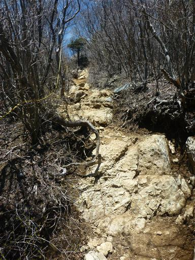
節刀ヶ岳山頂に到着。標高1736m。
ここが本日の最高峰だ。この山からも、もちろん富士山を望むことができる。
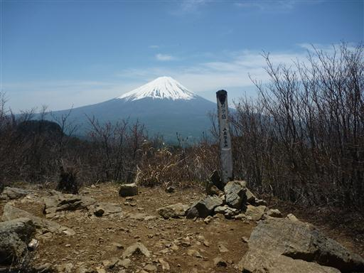
歩いて来た毛無山から十二ヶ岳のギザギザの稜線が良く見えている。
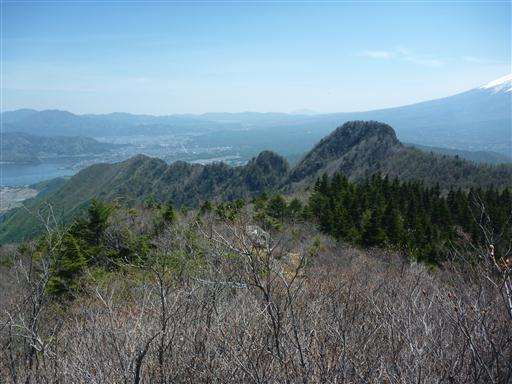
遠くにはまだ雪を抱いた南アルプスが見える。
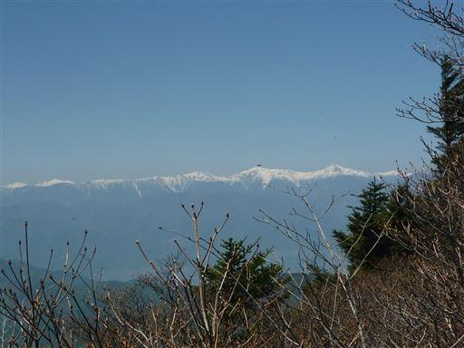
山頂でお昼タイム。
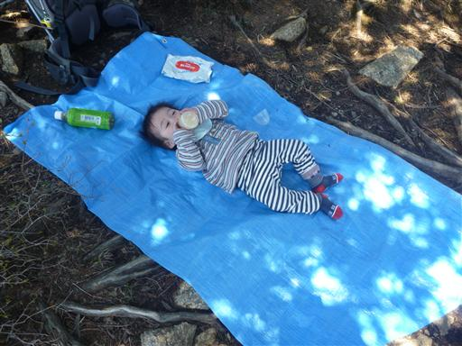
昼食をとったら十二ヶ岳まで来た道を引き返す。
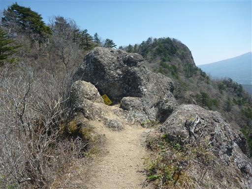
十二ヶ岳手前の難所に到着。団体登山者で渋滞している。
ここが本山行最後の登りだ。
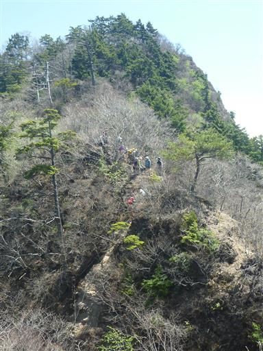
無事、十二ヶ岳まで戻ってくる。
奥にあるため人が少なかった節刀ヶ岳と異なり、こちらの山頂は人であふれている。

ここから桑留尾に下山する道を下って行く。
岩場はないが砂が堆積した急斜面で非常に下りにくい。

滑りやすい道が続く。
バランスを崩して手を振り上げた際に、運悪く棘のある植物があり、指先を怪我してしまった。
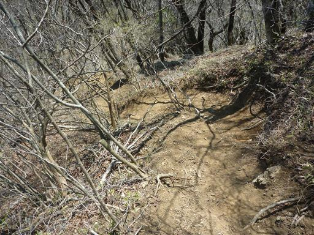
植林地帯に入ってようやく歩きやすくなる。
普段は植林が嫌いなのだが、この時ばかりはありがたく思う。
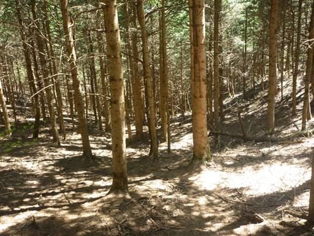
下界に近づくと植林地帯が終わり、歩きやすい尾根道になる。
この辺りは新緑が非常に美しい。
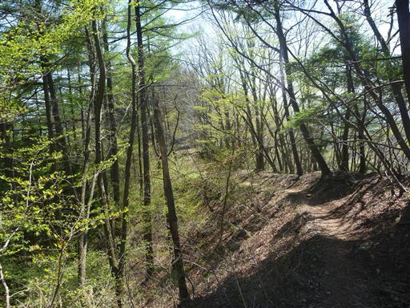
登山道なのに「通学路」？
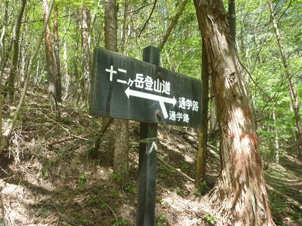
足元に咲くムラサキケマン。
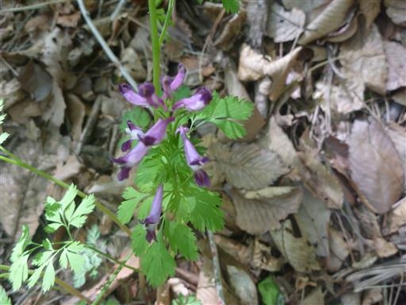
登山道入口に到着。「旧根場通学路」と標識に書かれている。
昭和初期には通学路として使われていたようだ。
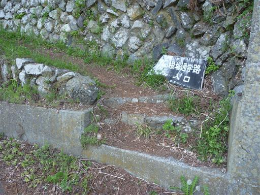
車道を少し下ると西湖が見えてきた。河口湖に比べると落ち着いた雰囲気だ。
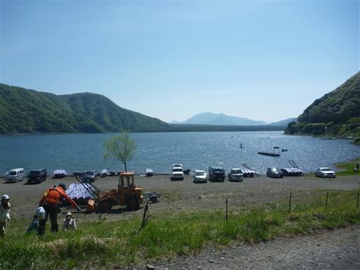
車道からは先ほど登った十二ヶ岳が高く聳えているのが見える。
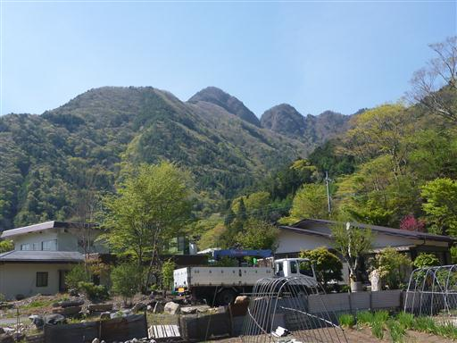
分化洞トンネルを抜けると駐車場だ。
自分のペースで登った久々の登山はかなり疲れてしまった。
累積標高差は1000m程度のはずなので、以前より体力が落ちているのか、
それとも荷物が重すぎるのか…
帰りは道が渋滞し、息子は泣いて大騒ぎで大変だった…
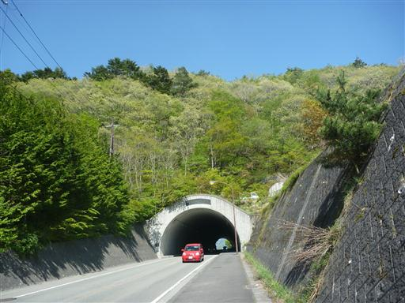